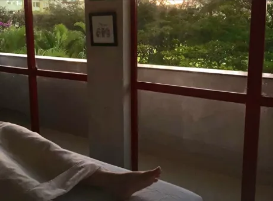
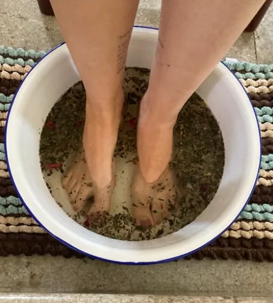
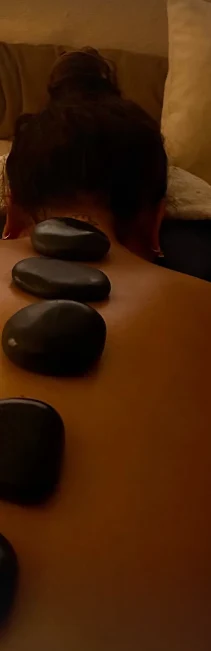
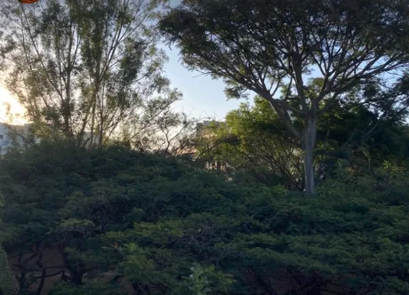
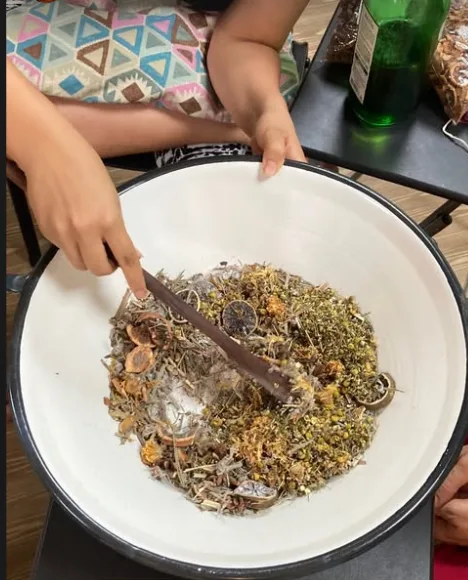

i. Chegada
Chá e conversa
Um chá de menta com flor azul, enquanto vocês conversam sobre o que o corpo está sentindo.
Massagem terapêutica · Asa Norte e Lago Norte · Brasília
Pedras quentes, ventosaterapia, escalda-pés de ervas e massagem terapêutica. A Bel leva o ritual até a sua casa, com hora marcada e sem pressa.
“suas mãos são bênção!”
cliente, via WhatsApp
Massoterapia em domicílio
Cadasessãocomeçaporouvir.Ondedói,comovocêtemdormido,oqueasemanapesou.Depoisvêmasmãos,aservaseocalor.Nenhumprotocolopronto.
60–90
minutos de massagem
5
técnicas combináveis
Em casa
Asa Norte e Lago Norte
Simulador
Mova os controles e veja o mapa reagir. Toque numa região do corpo para saber o que a Bel faria ali.
Estimativa ilustrativa para orientar a conversa. Não substitui avaliação profissional.
57
tensão
Frequência sugerida
quinzenal
Uma sessão a cada quinze dias segura a tensão antes de virar dor.
Onde a semana pesa. Ventosas soltam os pontos que a mão sozinha não alcança.
A Bel faria: Terapêutica com ventosas
Como é uma sessão
Quatro momentos, sempre nessa ordem.

i. Chegada
Um chá de menta com flor azul, enquanto vocês conversam sobre o que o corpo está sentindo.

ii. Aterrar
Água morna com ervas e flores secas. Os pés aquecem, a respiração desacelera, a cabeça começa a soltar.

iii. Cuidado
De 60 a 90 minutos, com a técnica escolhida para você. Corpo coberto com toalhas, pressão sempre combinada.

iv. Voltar
Alguns minutos para voltar devagar, sem pressa de levantar. E orientações simples para o resto da semana.
Como é uma sessão
Quatro perguntas
Responda em menos de vinte segundos. No final, a sugestão vai pronta para o WhatsApp da Bel.
Técnicas
Depoimentos
Mensagens reais de clientes, enviadas no WhatsApp da Bel. Muitas viram amigas. Todas são atendidas com o mesmo cuidado profissional.
Bel Pacífico
mensagens de clientes
Fazer massagem com você, minha Bel-dade, me fez chegar à seguinte teoria: você nasceu pra isso! Primeira vez com pedras quentes e foi perfeita. Por um momento até esqueci que o mundo tá acabando. E ainda teve um chazinho de menta antes [...] simplesmente divino 🌿
20:12
Obrigada por me salvar das tensões do dia a dia, suas mãos são bênção!! Quando você falou "vem fazer massagem que não tô aguentando te ver com esse pescoço", só confirma sua entrega profissional e atenção com o outro 🍀
14:06
Uma amostra
Inspire em quatro tempos, segure em quatro, solte em seis. Cinco ciclos e o corpo já entende o recado.

Quem cuida de você
Isabel, a Bel, é massoterapeuta em Brasília. Formada em Letras pela UnB, trocou o tempo dos livros pelo tempo do corpo e trouxe junto a atenção aos detalhes.
Trabalha com pedras quentes, ventosas, escalda-pés de ervas e massagem terapêutica. Gosta de luz baixa, janela aberta e de ver a cliente levantar da maca com outra cara.
Bairro
Massagem em casa, perto da rotina. Sem trânsito, sem estacionamento, sem pressa de voltar.
Bairro
A varanda, o jardim ou a sala que você preferir. A Bel monta tudo e deixa como encontrou.
Compromisso
Massoterapia profissional, com hora marcada e contato identificado.
Dúvidas
A Bel leva maca, toalhas, óleos, pedras e ervas. Você só precisa de um espaço tranquilo de uns dois metros. Montagem e desmontagem não contam no tempo da massagem.
Agenda aberta
Quatro toques e a mensagem vai pronta para o WhatsApp da Bel. Ela responde pessoalmente para confirmar dia e horário.
Ou fale direto
(61) 99425-7911